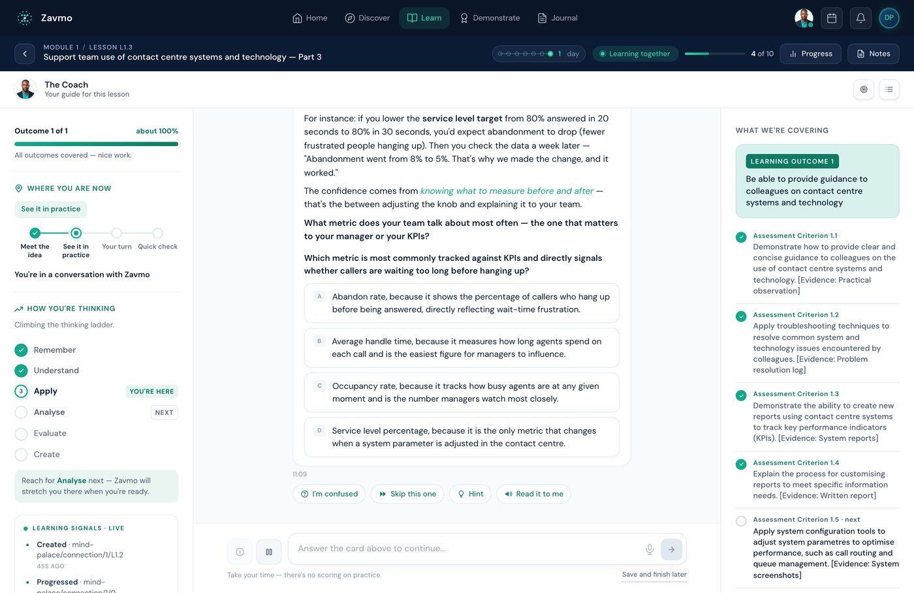
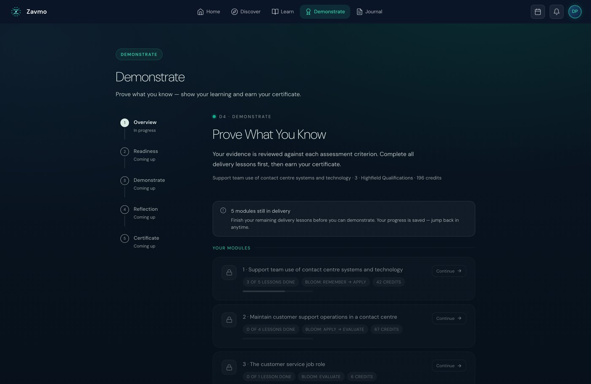

The argument for xAPI as the future of learning technologies.
The industry is moving off completion tracking, and the reason is structural rather than fashionable. This paper sets out what the move is and what the evidence says adaptive systems should adapt to. Then it answers the hard question. How can a learner take a route nobody designed and still be assessed against a fixed criterion.
A note on the numbers in this paper. Every figure is attributed in the references. Where a source could not be checked directly, it is not quoted as a figure. Our own numbers are dated and come from a code audit, including the ones that do not flatter us.
A specification does not get handed to IEEE because it is fashionable.
The strongest argument for what follows is not pedagogical. It is administrative, and it is on the public record.
SCORM is the packaging and run‑time standard that most corporate e‑learning still ships in. Its last edition, SCORM 2004 4th Edition, was released in March 2009.1 There has been no fifth edition. The standard that carries the majority of the world's workplace training content stopped being developed seventeen years ago.
Its successor did not stall. The Experience API was published by Advanced Distributed Learning, the same US defence research programme that produced SCORM.3 In 2023 it left that programme and became a formal international standard: IEEE 9274.1.1‑2023, IEEE Standard for Learning Technology, JavaScript Object Notation (JSON) Data Model Format and Representational State Transfer (RESTful) Web Service for Learner Experience Data Tracking and Access. The IEEE Standards Association board approved it on 30 March 2023 and published it on 6 October 2023. It is built directly on the xAPI 1.0.3 specification.2
Two supporting moves sit either side of it. cmi5, released in 2016, is the profile that lets an ordinary LMS launch and authorise xAPI content, so an organisation can move without abandoning the system it already runs.4 In education rather than corporate training, 1EdTech's Caliper Analytics is doing the same job with a different vocabulary, now at version 1.2.5
Select a year. Every date here is checkable against the publisher's own page.
March 2009. SCORM stops.
SCORM 2004 4th Edition is released. It is still the final edition. There has never been a fifth, and most corporate e-learning in the world still ships in this format.1
2013. xAPI 1.0.
Advanced Distributed Learning publishes the Experience API, out of the work known as Project Tin Can. Learning becomes a statement written to a record store rather than a status reported to an LMS.3
June 2016. cmi5.
The profile that lets an ordinary LMS launch and authorise xAPI content. This is the reason the move does not have to be all or nothing, and why you can keep the system you already run.4
30 March 2023. It becomes an IEEE standard.
The IEEE Standards Association board approves IEEE 9274.1.1-2023, built directly on xAPI 1.0.3, published that October. A specification does not make that journey because it is fashionable.2
One standard stopped in 2009. The other became an IEEE standard in 2023. That is not a trend. That is an industry finishing an argument.
There is a second force, and it is newer than any of the standards work. Adaptive systems built on large language models need a signal to adapt to. The quality of a tutoring system is bounded by the quality of what it can observe. A data model that records four facts at the end of a course cannot feed a system that is trying to make a decision every ninety seconds.
So the pull and the push arrive together. The old standard is frozen. The new one is ratified. And the thing everyone now wants to build cannot run on the old one.
SCORM can branch. It cannot represent a road nobody drew.
It is worth being fair to SCORM, because the usual criticism is lazy and the real limitation is more interesting.
SCORM's run‑time data model reports a small set of values from content back to an LMS. Completion status. Success status. A scaled score. Session time. A bounded set of interaction records.1 That is the working vocabulary, and everything an LMS knows about a learner's experience arrives through it.
SCORM 2004 also added Sequencing and Navigation, which is a genuine adaptivity mechanism. An author declares rules over an activity tree, and the LMS decides what the learner sees next. So the criticism that SCORM cannot adapt at all is wrong.
The limitation is narrower and much harder to work around. Sequencing operates over an activity tree that the author enumerated in advance, inside a single package, in a single launch session, reported to a single LMS. Every route a learner can take must already exist as a node someone drew.
That is the constraint that matters. A system that generates a response to a learner in the moment is, by definition, producing an activity nobody enumerated. There is no node for it. There is no completion flag that describes it. The record has nowhere to put it.
The consequence nobody planned
Because the record could only hold a completion, content was built to produce completions. One route, one order, a quiz at the end because a quiz produces a score. Linear courses were not a finding about how people learn. They were the shape that fitted the record.
A statement is an assertion about a person, not a field in a form.
xAPI records learning as statements with the shape actor, verb, object, with optional result and context. Statements are written to a Learning Record Store and are immutable once accepted.2,3
Four properties matter for what follows.
The vocabulary is open
ADL publishes a verb set, and an implementer may define more. A verb is a design decision about what is worth noticing, not a field the standard hands you. This is the whole freedom, and also the whole risk.
It is not bound to a launch session
A statement can come from a chat, a simulation, a workplace system, an assessor's phone. Learning outside the course is representable for the first time.
The object can be a criterion
Nothing requires the object of a statement to be a course. It can be an assessment criterion, a learning outcome, a national occupational standard. This is the hinge that section five turns on.
Negative and partial events are first class
Abandoned, dismissed, failed, interrupted. A learner leaving after four minutes is a statement. Under SCORM it is an absence of one.
One person, one forty minute session, working on a single assessment criterion. Switch between what each standard is able to write down.
cmi.completion_status completed cmi.success_status passed cmi.score.scaled 0.82 cmi.session_time PT40M12S that is the whole record
Four facts, and none of them is the interesting one. She got 82%. You cannot tell what she found hard, what she tried first, where she went back, or whether she can actually do the thing on Monday.
09:02 she initialised the session 09:05 she attempted the scenario, and failed it 09:09 she dismissed the worked example we offered 09:11 she asked "why does this break at scale" 09:18 she attempted the scenario again, and passed 09:26 she reachedBloomLevel evaluate 09:34 she demonstrated against criterion ZFF-AU-05.2 09:41 she mastered criterion ZFF-AU-05.2
The same forty minutes, described. She refused the help, asked the better question, and got there on the second attempt. That sequence is what a tutor would have noticed, and it is the part a completion flag throws away.
To make that concrete rather than abstract, here is our own vocabulary. Zavmo catalogues 217 event types. Alongside the standard ADL verbs it defines its own. Discovered, discussed, delivered and demonstrated mark the four phases of a learning loop. Mastered lands against a criterion. ReachedBloomLevel fires when a learner crosses a threshold of thinking. Dismissed fires when a learner rejects something the system recommended.

Of those 217, 187 have a live emission point in the code, and 67 have actually fired in production, measured on 17 July 2026. We publish all three numbers because they mean different things and conflating them is how this field talks itself into believing it has data it does not have. Catalogued is an intention. Wired is an implementation. Observed is a fact. Only the third one is evidence.
Pick a verb. See the assertion it makes, and what the older standard would have stored for the same moment.
Adaptivity is only as good as the variable it adapts on.
A system that can observe anything still has to decide what to do about it. This is where most adaptive learning has gone wrong, and the research literature is clear enough to act on.
Start with the ceiling
Bloom's 1984 result is the reason anyone cares about personalisation: one‑to‑one mastery tutoring moved the average learner around two standard deviations above conventional class instruction.7 Later work is more sober. VanLehn's 2011 review put human tutoring at an effect size of roughly 0.79 and intelligent tutoring systems at roughly 0.76, close enough that he described them as nearly as effective as human tutors.6
That second finding is the more useful one. The advantage was never that the tutor was human. It was that the tutor could see what the learner was doing and respond to it.
Adapt on prior knowledge and current performance
The best‑evidenced adaptive variable is what the learner already knows and how they are performing now. Knowledge tracing, introduced by Corbett and Anderson in 1994, models the probability that a learner has acquired a particular skill and updates it with each observed attempt.8 Deep knowledge tracing later replaced the hand‑built model with a recurrent network over the learner's interaction sequence.9
Both require the same input: a sequence of observed attempts, tagged to a skill. That is an xAPI statement stream. It is not a completion flag.
Adapt the schedule, not just the content
Two of the largest and most replicated effects in the learning literature are about timing rather than material. Spacing practice across time outperforms massing it,10 and retrieving information from memory outperforms restudying it.11 Bjork's work on desirable difficulties makes the underlying point: conditions that slow performance during practice often improve retention afterwards.12
This has an uncomfortable implication for adaptive systems. A system optimising for a smooth session is optimising against learning. Sometimes the correct adaptation is to make it harder, or to come back in nine days.
Manage load, and expect it to reverse
Cognitive load theory explains why the same material must be presented differently to a novice and an expert.13 Worked examples help beginners and start to hinder people who already know the material. Adaptivity here is not a nicety. Getting it wrong actively harms the more advanced learner.
The thing not to adapt to
The most popular basis for personalisation is the one with the least support. Pashler and colleagues reviewed the evidence for matching instruction to a learner's self‑reported learning style. The studies needed to justify it had almost never been run. Those that met the standard did not support the practice.14
We are saying this in our own white paper because it constrains our own product. Preference is worth collecting, because it affects whether somebody engages at all. It is not a sound basis for deciding what a learner is taught. Prior knowledge, observed performance and time since last retrieval are.
Personalisation that adapts to what someone says they prefer is a comfort feature. Personalisation that adapts to what they have just demonstrated is an instructional one.
How a free route and a fixed outcome are compatible.
Here is the objection that stops most adaptive projects, and it is a good objection. If every learner takes a different route, what exactly is being certified? An external verifier is entitled to ask how two learners who did different things can hold the same qualification.
The answer is not new and it is not a technology answer. It comes from two established frameworks in assessment design, and the whole architecture in the next section is an implementation of them.
Constructive alignment
Biggs set out the principle in 1996: the intended learning outcome is the fixed point of a course, and teaching activities and assessment tasks are designed backwards from it.15 The outcome states what the learner must be able to do. It does not state how they got there. Under this framing a varied route is not a compromise. It is the design working as intended, so long as every route terminates in the same demonstrated capability.
Evidence‑centred design
Mislevy, Steinberg and Almond made this operational for assessment.16 Their framework separates three things that are usually collapsed together:
The student model
What we want to claim about the learner. In a regulated qualification this is the assessment criterion, written down and levelled.
The evidence model
What observation would justify that claim, and how an observation is scored into it. This is the part that protects the qualification.
The task model
The situation that produces the observation. Explicitly a design variable. Many tasks can yield the same evidence.
Read those three together and the objection dissolves. The claim is fixed. The rule for what counts as evidence for the claim is fixed. The task is the only thing free to move, and it was always meant to be.
This is why an adaptive system and a regulated qualification are not in tension. They are in tension only when the task is mistaken for the outcome, which is exactly the mistake a completion flag encourages, because a completion flag can only refer to a task.
What it looks like on one criterion
Take a single assessment criterion at Level 5: the learner can evaluate where an AI tool should and should not be used in their own department's work.
One learner reads and writes
Studies the material, produces a written evaluation of three processes in their department.
One learner argues
Debates the question with a teaching character until they can defend a position against challenge, and the exchange is the evidence.
One learner builds
Automates a real task badly, sees what breaks, reasons about why that class of work resisted it, and rebuilds.
Pick a learner. The route changes completely. Look at what does not change underneath.
she experienced the guidance on tool selection she attempted a written evaluation of three processes she reachedBloomLevel evaluate she mastered criterion ZFF-AU-05.2
he discussed tool selection with a teaching character he responded to four challenges to his position he reachedBloomLevel evaluate he mastered criterion ZFF-AU-05.2
they attempted automating a real weekly task they failed it, and said why in their own words they attempted it again on a narrower process they reachedBloomLevel evaluate they mastered criterion ZFF-AU-05.2
Criterion ZFF-AU-05.2, at Level 5. The learner can evaluate where an AI tool should and should not be used in their own department's work. Same criterion, same evidence rule, same level of thinking demanded. Only the task moved, and the task was always the variable.
Three tasks, three routes, three very different sessions. One evidence model. Each produces a statement asserting mastery against the same criterion identifier, with the working attached. A verifier reads the same claim in all three cases and can inspect what produced it. All three routes are live on Zavmo.ai today.

Under SCORM this is not merely hard. It is unrepresentable, because there is one completion flag and it refers to the course, not the criterion.
Four parts, and only one of them moves.
If the frameworks above are right, the system design falls out of them almost mechanically.
A criterion registry
Every learning outcome and assessment criterion has a stable identifier and a level. This is the fixed spine. It changes through a specification revision, never at runtime, and never because a learner did something unexpected.
A statement stream
Everything the learner does, as xAPI statements, tagged with the criterion in play, the level of thinking demanded, and the session. This is the only part that varies freely.
An evidence model
The rule that decides which statements, in which combination, justify a claim of mastery against a criterion. Authored deliberately, reviewable by a verifier, versioned like code.
A learner state model
The running estimate of what this person can currently do, updated from the stream, used to choose what happens next. This is where knowledge tracing lives.

The audit trail is the statement stream itself. An external verifier does not read a completion report. They read what the learner did, in order, with the evidence model that turned it into a claim sitting alongside it. That is a stronger audit position than the one it replaces, not a weaker one, and it is the argument to make to a quality manager rather than the argument about personalisation.
This is how Zavmo is built, and the four parts above are the actual shape of it rather than a reference design. One deliberate constraint is worth naming. The generative part of the system chooses tasks and responses. It does not choose criteria, and it does not decide whether a criterion has been met. Those two decisions sit with the fixed registry and the authored evidence model. A system that lets a model invent the standard it is being judged against has no standard.
The plumbing is the easy half.
Anyone who tells you this is a migration project has not done it. Four things are harder than the technology.
Choosing the verbs
An open vocabulary means every verb is a decision about what is worth measuring. A badly chosen verb is a badly chosen measure that then looks like data. This is instructional design work, not engineering work, and it is usually given to the wrong people.
Wiring what you catalogued
The gap between events you designed and events that actually fire is real and it is large. Ours is 217 catalogued against 67 observed. Anyone claiming rich learning data should count theirs before quoting it.
Validity
A statement is not evidence because it exists. It is evidence because an evidence model says it bears on a claim. Without that step you have replaced one weak measure with a very large number of weak measures.
Privacy
Process data is more revealing than completion data. Hesitation, abandonment and repeated failure describe a person in a way a score does not. Data minimisation, retention limits and a lawful basis are design inputs here, not paperwork afterwards.
The privacy point deserves one more line, because it is the one most likely to be skipped. The argument of this paper is that you should capture how somebody learns. That is a more intimate record than what they scored, and it belongs to them. Anyone building this should be able to say what they collect, why, for how long, and how a learner gets it deleted, before the first statement is written.
Not with a migration.
Write down what you cannot currently see
Take one course you already run. List the things you wish you knew about the people taking it that your LMS cannot tell you. Most of them will not be scores.
Count what your systems have actually recorded
Not what the specification says they can record. What has fired. The gap is usually the whole story, and it is a one afternoon exercise.
Fix your outcomes before you free your routes
Stable criterion identifiers and an authored evidence model come first. Adaptivity on top of vague outcomes produces variety without assurance, which is the worst of both.
Instrument one criterion end to end
One criterion, more than one route to it, statements landing against the criterion rather than the course. Take that to your quality lead before you take it to your board. If you would rather see one working first, take a session on Zavmo.ai.
Use cmi5 if you are keeping your LMS
It exists precisely so this is not an all or nothing decision.4
Eight things a good tutor would notice about a learner. Tick the ones your current system could actually answer for a named person, this afternoon, without asking them.
Nothing ticked yet. Tick what your system can genuinely answer, not what it stores somewhere.
Reading about it is the weakest version of this.
Zavmo is built the way this paper describes. Fixed criteria, free routes, a statement for every step, and an evidence model that turns them into a claim a verifier can inspect.
Go and take a session. You will produce the statements yourself, which is a faster way to understand the argument than another page of it.
Experience it on Zavmo.ai Back to all proposalsEvery claim, traceable.
- SCORM. Advanced Distributed Learning, Sharable Content Object Reference Model. SCORM 2004 4th Edition released March 2009 and remains the final SCORM edition. Run‑time data model reports completion status, success status, score and session time to an LMS. Version history and overview at scorm.com/scorm-explained.
- IEEE 9274.1.1‑2023. IEEE Standard for Learning Technology, JavaScript Object Notation (JSON) Data Model Format and Representational State Transfer (RESTful) Web Service for Learner Experience Data Tracking and Access. Standards board approved 30 March 2023, published 6 October 2023. Described by IEEE as a collaborative effort to improve and standardise the xAPI 1.0.3 specification. standards.ieee.org/ieee/9274.1.1.
- xAPI. Advanced Distributed Learning, Experience API. Actor, verb, object statements written to a Learning Record Store, recording experiences beyond a single LMS. Originated as Project Tin Can, version 1.0 in 2013.
- cmi5. An xAPI profile defining launch, authorisation, reporting and course structure so an LMS can run xAPI content. Released June 2016. Adoption supported by the cmi5 CATAPULT project. xapi.com/cmi5.
- Caliper Analytics. 1EdTech, current version 1.2. A parallel standard for capturing learning activity through metric profiles and a common labelling vocabulary. 1edtech.org/standards/caliper.
- VanLehn, K. (2011) The relative effectiveness of human tutoring, intelligent tutoring systems, and other tutoring systems. Educational Psychologist, 46(4). Human tutoring effect size approximately 0.79, intelligent tutoring systems approximately 0.76.
- Bloom, B. S. (1984) The 2 sigma problem: the search for methods of group instruction as effective as one‑to‑one tutoring. Educational Researcher, 13(6).
- Corbett, A. T. & Anderson, J. R. (1994) Knowledge tracing: modeling the acquisition of procedural knowledge. User Modeling and User‑Adapted Interaction, 4(4).
- Piech, C. et al. (2015) Deep knowledge tracing. Advances in Neural Information Processing Systems 28.
- Cepeda, N. J., Pashler, H., Vul, E., Wixted, J. T. & Rohrer, D. (2006) Distributed practice in verbal recall tasks: a review and quantitative synthesis. Psychological Bulletin, 132(3).
- Roediger, H. L. & Karpicke, J. D. (2006) Test‑enhanced learning: taking memory tests improves long‑term retention. Psychological Science, 17(3).
- Bjork, E. L. & Bjork, R. A. (2011) Making things hard on yourself, but in a good way: creating desirable difficulties to enhance learning. In Psychology and the Real World.
- Sweller, J. (1988) Cognitive load during problem solving: effects on learning. Cognitive Science, 12(2).
- Pashler, H., McDaniel, M., Rohrer, D. & Bjork, R. (2008) Learning styles: concepts and evidence. Psychological Science in the Public Interest, 9(3).
- Biggs, J. (1996) Enhancing teaching through constructive alignment. Higher Education, 32.
- Mislevy, R. J., Steinberg, L. S. & Almond, R. G. (2003) On the structure of educational assessments. Measurement: Interdisciplinary Research and Perspectives, 1(1). The student, evidence and task model framework known as evidence‑centred design.
- Anderson, L. W. & Krathwohl, D. R. (eds, 2001) A Taxonomy for Learning, Teaching, and Assessing: A Revision of Bloom's Taxonomy. The revised taxonomy states cognitive processes as action verbs.
- Zavmo emission audit. zavmo.ai. 217 event types catalogued, 187 with a live emission point in code, 67 observed in production. Measured 17 July 2026 by a deterministic code audit and a production query.
- Denny, J. (2026) Measured in verbs: hyper personalised learning in the age of AI. Companion paper. juliettedenny.com
Sources 1, 2, 4 and 5 were checked directly against the publisher's own page while writing. Source 18 is our own measurement. The remainder are standard published works in learning science and assessment, cited by author, title, year and journal so any claim here can be followed to its origin.